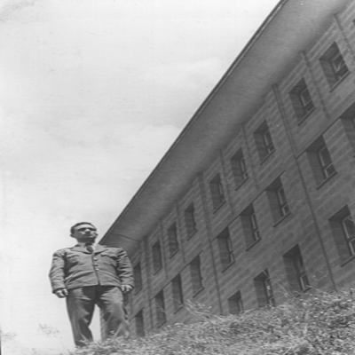

Tabak Ahmet soğuk suların içinde çıplak ayakla deri çiğnemekten siroz olup ölünce 1940 kışının ayazında, Manisa’nın o küçük ilçesi Demirci’de üç oğlan çocuğu bir de Emine Babaannem kalır geride.
Demirci (1940’lar)
Demirci’nin alt mahalleleri, arkada bağlar görünüyor. Civarı ormanlarla doludur. Kadınlar halı dokur, erkekler ticaret yaparmış. Çocukluğumda nalbantlar, semerciler hâlâ vardı.
“Yiğidin harman olduğu yer” demek istemem; ama Çılgın Türkler kitabında Ege’de Kurtuluş Savaşı’nı başlatan yerlerden biri olarak anılır.
Çok iyi bir örnek ve kalbime işli beyaz turunçgil çiçekleri kokan hatıralar.
Dört yaşındaki yetim Erdoğan bir süre göremeyince sorar büyüklerine, “Babam nerede?”
Derler “Bulutların üzerine çıktı.”
Küçük çocuk yıllarca kafası gökyüzünde dolaşır, bulutların üstüne, kıyısına, orasına burasına bakar “Babamı göreceğim” diye.
Kendi babası olmadığından mıdır nedir? Bizi çok sevdi, hep öptü, kokladı.
Emine Babaannem bir başına sadece gündüzleri evlere halı dokumaya gider, geceleri mum ışığında oya işler. Günlük alacağı yevmiyeyle ev geçindirip çocuk okutmaya çalışır.
Altı yaşındayken dayısı Nuri Tanrıseven ve ninesiyle birlikte Balıkesir’e giderler, dayısı orada mahiyet memurudur. Ali Ağabeyi de Ayvalık’ta tanıdıklarının yanında ortaokulu okur.
Ortanca kardeş Mehmet Amcamla babaannem Demirci’de kalırlar. Mehmet Amcam hastalanır, birkaç yıl okula gidemez. Tekrar okula başladığında sınıftakilerden çok büyüktür, herkes alay eder, o da okulu bırakır, berber olur; dünyanın en iyi kalpli, eşek tıraşı yapan berberi.
Nuri Dayı kaymakam vekili olarak Burhaniye’ye atanır (1942). Babam orada ilkokula başlar. 1943’te Demirci’ye döner, Ziya Bey İlkokulu’nda birinci sınıfa devam eder.
Dayının tayini Erzincan’ın Kemaliye İlçesi’ne çıkınca oraya giderler, iki yıl kalırlar, ikinci sınıfı orada bitirir.
İzmir (1974 yazı)
Çiğli hava lojmanlarındaki evin önünde, Mehmet Amcam keklik gibi sekiyor, ben de hayranlıkla seyrediyor ve figür kapmaya çalışıyorum. “Sünnet fotoğrafı galiba” diye düşünen okurlar varsa, “Hayır, bu benim gündelik kıyafetim, her günümüz böyle geçiyordu” derim.
Daha önce Demirci’den hiç çıkmadığı için, amcamın askerliği, Yüzüklerin Efendisi’nde Mordor’a yapılan yolculuk gibiydi. Bir macera, bir macera. Rahmetli sağlıkçıymış, bir gün albay, “Tentürdiyot nereye sürülür?” diye sorduğunda, herkes “Üstüne”, bir tek amcam “Etrafına” diye karşılık vermiş. Komutan da “Aferin” demiş. (Bkz. Gandalf’ın ağaç adam ordusuyla savaşı kurtardığı sahne, kralın dönüşü.) Onu hep böyle güler yüzlü, neşeli hatırlarım. Bir gün de Yotan’daki aşağı bağda bir kabak yaprağının altında bir tavşan yakalar, adamın biri gelir “Beş lira vereyim, bana sat” der. Amcam da satar. Hikâye bu kadar, hiç öyle ders mers çıkarılacak bir şey değil, değil mi? Rahmetli hep anlatırdı, ben de size anlattım. Eski püskü radyosunda klasik sanat müziği dinler ve ince sesiyle şahane söylerdi, tüm makamları bilirdi. Bir gün yemekten sonra elini yıkarken keyfi gelmiş, türkü söylüyormuş. Babaannem içerden sormuş “Saime ne söylüyor bu?” (Kulağı az işitirdi.) Saime Yengem, “Yarabbi şükür diyor anne, Yarabbi şükür diyor” diye yanıtlamış.
1945’te Elazığ, Pülümür’e tayini çıkar Nuri Dayı’nın, küçük Erdoğan üçüncü sınıfı orada okur. Buradaki en önemli figür “Arap”tır. Bir gün genç kaymakamın odasına bir saksağan yavrusu getirir köylüler ve eğitildiklerinde saksağanların konuştuğunu söylerler. Küçük Erdoğan tav olur, kuşu eve alırlar. Saksağanın dilinin ucunda uzayan tırnak gibi bir bölüm vardır, “Uzadıkça o bölümü kesin” derler. O bölümü babaannem kestiğinden “Arap”, babaannemi hiç sevmez. Cidden de bir süre sonra konuşmaya başlar. Tabii öyle çok dolu bir muhabbeti yoktur; ama Nuri, Erdoğan, Arap gibi kelimeleri tekrarlar. Bir de mahallenin yoğurtçusuna takar. Arap, kafesinde balkonda beklerken her gün geçen yoğurtçu “Yoğurtçii” diye bağırınca, Arap da yüksek sesle “Yoğurtçii” diye tekrarlar. Her seferinde yoğurtçu durur sırtından tablaları indirip etrafa bakar “Kim çağırıyor” diye. Kimseyi göremez, kızar söylenir, cevap veren olmaz.
1946’da Demirci’ye dönerler, ilkokul dört ve beşi Demirci’de okur. Öğretmeni Adviye Yenge’dir, yani Nuri Dayı’nın eşi. Adviye Yenge’yi yıllar sonra aklım ermeye başladığında Ankara’da, Emek’teki evlerinde tanıdım. Tatlı bir kadındı, yanında mutlaka ya mendil ya çorap bulunur, çocukları evden hediyesiz göndermezdi.
1948’de ortaokulu okumak için Osman Dayısı ve Ali Ağabeyi ile birlikte Ankara’ya giderler. Ali Amcam bir yandan Ankara Üniversitesi Hukuk Fakültesi’nde okur, bir yandan da Merkez Bankası’nda çalışır. İsmetpaşa’da kırık dökük bir ev tutarlar. “Son derece garibandık, çok müşkül durumdaydık” der geçerdi babam, neredeyse hiç anlatmadı o günleri. 1952’ye kadar, üç yıl Ankara’da yaşarlar, 1952’de Kayseri’nin Develi İlçesi’ne giderler, orta sonu burada okur, dört yılda ortaokulu bitirir.
Ali Amcam aileyi geçindirme görevinin üzerinde olduğunu düşünerek Hukuk’u yarıda bırakır, lise öğretmeni olur. O arada askerlik hizmeti gelir. O zamanlar lise öğretmenlerini ordu asteğmenliklerinden sonra teğmen olarak almaktadır. Tezkere bırakır ve orduda muvazzaf subay olarak kalır, Diyarbakır’a atanır.
1953’te aile Diyarbakır’da buluşur, üç kardeş ve Emine Babaannem. Liseye burada başlar.
Ali Amcam emekliliği geldiği saat hemen emekli oldu; burada “Genç yaşta çok çalışmış olmasının verdiği yorgunlukla” gibi bir cümle kuramayacağım; çünkü rahmetli görüp görebileceğiniz en tembel ve en nüktedan insanlardan biriydi. Aynı yere üç kişi girer, Ali Amcam çıkınca gördüklerini bir anlatır, herkes yerlerde, diğerleri onun gördüklerini görmezdi. Cuma namazlarından dönüşü toplu olarak beklenirdi, kısacık namazda yaşadıklarıyla milleti güldürür dururdu.
Tembelliğiyle ilgili efsaneler ise şunlar: Suna Yengem bir gün çayını koyar, olur da üşenir diye, içine şekerlerini atar, kaşık da içinde getirir verir. Amcam bakar, “Çayımızı da kendimiz mi karıştıracağız” der. Suna Yengem salonda iş yaparken amcamın içeriden sesi duyulur, “Hanıım çabuk gel”, yengem koşarak gider. Amcamı sedirde yan yatmış şekerleme yaparken bulur, “Hanıım şu göbeğimi sağdan sola döndürsene.” “Emekli olunca Karşıyaka’da dükkan açıp karpuz suyu satacağım, müthiş talep olur” diye ticari zekâsını belli ederdi, maksat işe gir muhabbeti olmasın. Emekli olunca tek işi sabah Emekli Subaylar Derneği’ne giderken karşıdaki bakkaldan bir ekmek, bir gazoz alıp sarkıtılan sepete koymaktı. Akşamdan onun stresini yaşardı: “Üff yarın ekmeği al, sepete koy aman iş mi bu?”
Demirci, Manisa (1934 olmalı)
Bu fotoğrafın değeri tahmin edemeyeceğiniz kadar fazla. Solda babaannemin kucağında eteklikle Mehmet Amcam. En sağda Fatma Nine (1890-1965), büyük anne diye anılırmış. Aradaki Ali Amcam. Ortada hocanne (hoca anne) Asya Nine, büyük annemin teyzesi. Arkadaki çocuk Osman Dayı. Şimdi büyülü ana geldik.
Arkada, bulutların arasında hayal meyal gördüğünüz kişi, babamın bulutların arasında aradığı babası, Ahmet Dedem. Bu fotoğraf dedemin kısa hayatında çektirdiği iki fotoğraftan biri. Diğerini de birazdan göreceksiniz. Bunlar, küçük Erdoğan’ın babasını görebildiği fotoğraflar.
Yıl 1988 evin telefonu çaldı, ağır bir grip geçiriyorum, yataktayım. Suna Yengem, “Amcan vefat etti” dedi. Tüm şekiller beynimde dönerek, bana soyduğu elmalar, anlattığı masallar, verdiği harçlıklar, muziplikleri, gülümsemesi, Konya Orduevi’nde Neil Armstrong’un aya ayak bastığı o gece, parlak dolunayı bana gösterip anlatırken içtiğim enfes üzümlü gazoz, hepsi gözlerimden boşandı.
Reşadiye, 1749. Sokaktaki Yıldırım Apartmanı’na gittiğimizde o huzurlu eve ölümün girebileceğini hiç düşünmediğimi fark ettim. Amcamın bu yaşam tarzıyla normalde 150 yıl yaşaması gerekirdi.
Beynim, bu kitabı yazarken on dokuz yıldır sildiği bir başka acıyı hatırlattı bana.
Ambulans geldiğinde onu taşıyabilecek kimse yoktu. Güçsüz kollarımla amcamı ben aldım kucağıma, beş bitmez kat indirdim. Yaşadığım acıyı anlatamam.
Allah rahmet eylesin.
Etrafına huzur yayan, çok iyi bir adam ve çok iyi bir ağabeydi.
1954’te Manisa’ya gider ve lise ikinci ve üçüncü sınıfı burada okur.
Burada bir öğrenci yurdunda kalır, harçlığını Ali Ağabeyi gönderir. O zamanlar banka, havale, EFT zor. O tarafa gidip gelen bir tanıdıkla gönderilir para. Bir seferinde parayı emanet ettikleri kişi parayı vermez on sekizine girmiş Erdoğan’a. Yurdun paragöz sahibi çağırır, “Nerede para?” diye sorar. Babam, “Henüz gelmedi” cevabını verince “O zaman paran geldiğinde gelirsin yurda” deyip dışarı atar genç çocuğu.
Okul sonrası Manisa’da bir parkta yatar gece. Ertesi gün, ders sonrası yine parka gider. Okuldaki edebiyat öğretmeni Nazik Erik bir faytonla evine gitmekteyken parktaki başarılı öğrencisini görür. Yanına çağırır:
– Erdoğan ne arıyorsun sen burada?
– Oturuyorum öğretmenim.
– Geç olmadı mı?
– ...
– Gel bakalım faytona.
Nazik Öğretmen, nazik nazik Erdoğan’ı eve kadar sorgular, durumu anlar.
“Evde ekmek kalmamış” deyip yüklüce bir para verir. “Hadi bakalım bakkala” diye yollar babamı. Babam elinde ekmek dönüp paranın üstünü uzattığında
– Üstü senin.
– Hocam olmaz.
– Olur, olur.
– Hocam ben bunu size uzun süre ödeyemem.
– Ödeyeceksin.
– ?
– Nasıl biliyor musun? İşe başladığında, etrafında ihtiyaç içinde dürüst öğrenciler olacak, parayı onlara ödeyeceksin.
Babam o gün ağlaya ağlaya gidip yurdun parasını ödemiş, bugün anlatırken de ağlar. Ben de yazarken ağlarım. Niye bilir misiniz?
Dün akşam İstanbul’da liselerde cep telefonuyla çekilmiş görüntüler izledim televizyonda. Öğrenciler öğretmeni ittiriyorlar, koltuğuna oturuyorlar, biri arkadan erkek öğretmene bağırıyor: “Kucağına otur kucağına.” Sınıf defterini önünden alıp kaçırıyorlar, bir başka sınıfta öğretmen sınav yapıyor, öğrenciler cam kenarında sigara içiyorlar.
Elli yıl arayla aynı ülkeden iki fotoğraf. Sizi elli yıl yöneten o adamlar hâlâ yaptıkları barajları, yatırımları, köy kentleri anlatsınlar. Sağı ve solu bu ülkenin insanlığını kaybettirdiler. Türk isimli, ruhu Amerikalı ne olduğunu bilmeyen gençlerle doldurdular ülkeyi.
Sarıçamların Asya Hoca (1851-1939). Büyük annenin teyzesi. Annesinin adı Emine, ninesinin adı Oruçlar’ın Zalha (Zeliha) kalfa. Kardeşi Halime, büyük annenin annesi Demirci’deki birçok insana hocalık etmiştir. Asya Hoca’ya ailede “hocanne” denirmiş, babası 1833 doğumlu Kazağaçlı Osman’dır. Büyük anneyi iki kardeş beraber büyütmüşler. O dönem tüm Demirci’nin tanıdığı, çok saygı duyduğu bir insanmış. Eşi İbrahim Hoca hayatında hiç çalışmamış bir ilim ve gönül adamı. 1800’lü yıllar, İbrahim Hoca İstanbul’a gider, aylarca oradaki medrese ve dergâhlarda ders alır, gelir eşiyle ve diğer insanlarla paylaşırmış. “Bu senin adam sana bakmıyor” dediklerinde “Bir topan ekmeğini1 yemedim ama cahilin başının tacı olacağıma, âlimin ayağının tozu olurum” dermiş. Üç günde Kur’an-ı Kerim’i hatmedermiş. Erkek gibi kadın derler ya, halı dokur, dokuduğu halıları ve başka halılar alıp, köylere gidip ticaret yaparmış. Birinci Dünya Savaşı, seferberlik var, evini geçindirirmiş. Bu arada da çocuk okuturmuş. Herkesin din âlimi gördükleri bir karı kocaymışlar. Fatma diye bir kızı olmuş; ama yaşamamış, bir daha çocuğu olmayınca kocasına bir kız istemeye gitmiş, vermişler. Kendi nikâh yüzüğünü çıkartmış, nişan yüzüğü olarak takmış. Herkes kızmış, “Sen nasıl böyle bir şey yaparsın?” demişler. “Başka türlü çocuğu olmaz, nasıl böyle bir şeye müsaade ederim” demiş. Bir dönem Atatürk Kur’an kurslarını ve Kur’an-ı Kerim eğitimini yasaklar, radyolarda Türk müziğinin de yasaklandığı dönem. Hocanne gizli gizli evinde eğitim vermeye devam eder. Polis gelir, karakola götürürler “Gizli gizli Kur’an öğretiyormuşsun” derler. Hayatında ilk defa devletle yüz yüzedir, korkar “Eskiden öğretiyordum; ama Atatürk nayettiğinden (yasaklandığından) beri yapmıyorum” der. Serbest bırakılır, yine devam eder.
Annesi ve babası aynı gün ölürler. Annesi Emine öğleyin, onun acısına dayanamayan babası Osman ise hemen ardından ölür. Döneminin en sevilen, saygı gören âlim insanlarından biriymiş.
Nazik Anne bizim de annemiz oldu, bize yıllarca geldi, biz ona gittik. Evdeki adı hep Nazik Anne’ydi. Ben yatılı okulda okuduğum için daha az tanıyabildim; ama hep ailemden dinledim.
Birkaç yıl önce, Isparta Millî Eğitimi’nde 3 bin öğretmene bir konferans verdim. Nazik Anne beni aradı:
“Oğlum ne yaptın sen burada benim elli yıldır yapamadığımı iki saatte yapmışsın, bütün öğretmenlerin gönlünü kazanmışsın.”
Ben, ona diyemedim ki “Nazik Anne senin bir gencin hayatına yaptığın katkının binde birini ben hayatım boyunca yapamadım. Allah bilir daha böyle kaç gence destek verdin, hayatlarını etkiledin. Bizimkisi hep yüzeysel, sense hep yüreklerinde yer ettin insanların.”
Sonradan annemden öğrendim ki babam o borcu öde öde bitirememiş. Bayram tatiline gidemeyen öğrencilerine bilet almış, kimine harçlık vermiş. O da “Borcunuzu başkasına ödeyeceksiniz” demiş gururlu, dürüst çocuklara.
Emin olun onlar da ödüyordur.
Babamın doğduğu ev. O dönemdeki evler hep ahşap. Birkaç büyük yangın olmuş. Birkaç da büyük zelzele (siz deprem dersiniz). Yıkık dökük evin bir penceresinden büyük anne bakıyor. Bir penceresinden Mehmet Amcam ve Saime Yengem. Sekiz çocukları düştü ya da doğum sonrası yaşamadı, dokuzuncu çocuğu kuvözde İzmir’de yaşatmışlar. Ahmet Baki İzgören. Ahmet yaşamayan sekiz çocuğun yaramazlık açığını kapattı. Yürümeyi öğrenir öğrenmez gördüğünüz pencereden atlamış. Üç katlık bir yükseklik düşünün. Aşağıdaki incir ağacı hayatını kurtarmış.
Babaannem bir gün namaz kılarken, Ahmet arkadan gelip baş örtüsünü kibritle tutuşturuyor. Mehmet Amcam doğru Ahmet’in peşinden gidiyor, dövmek için kovalıyor. Babaannemin baş örtüsü söndükten sonra, “Mehmet oğlum keşke önce beni söndürüp sonra Ahmet’i dövseydin” diyor.
Genç Erdoğan derslerine daha çok asılır, felsefe ve edebiyatta çok başarılıdır. Felsefeye de Rahmi Bey gelmektedir, bizimkine arkadaşları Aristo lakabını takarlar.
1956’da lise biter ve A.Ü. Dil ve Tarih-Coğrafya Fakültesi (DTCF) Türk Dili ve Edebiyatı Bölümü’nü kazanır ve Nazik Erik’e bir mektup yazar: “Ben sizi çok seviyordum ama lisedeyken bunu belli etmiyordum, iltimas olsun istemiyordum.”
Nazik Anne 1957’de Ankara İlköğretmen Okulu’na edebiyat öğretmeni olarak atanır. Bahçelievler’de bir ev tutar. Ankara’da öğretmen-öğrenci saygısı, ana-oğul sevgisine dönüşür, Nazik Anne’nin felsefi sohbetleri genç Erdoğan’ın geleceğine, ülke sevgisine yön verir.
Silahlı Kuvvetler bir imtihan yapar. Erdoğan kazanır ve üniversiteyi Silahlı Kuvvetler adına okur. Dikimevi’ndeki, Ankara Tıp’ın karşısında, Harita Genel Komutanlığı’nın üzerindeki Fakülte Yüksek Okullar (F.Y.O.) Komutanlığı’nda kalır.
O dönemde derslerine giren DTCF’nin hoca kadrosu çok etkileyici: Fonetik’e Doğan Aksan, Yeni Türk Edebiyatı’na Kenan Akyüz, Eski Türk Edebiyatı’na Hasibe Mazıoğlu, Türk Lehçeleri’ne Saadet Çağatay girermiş.
1960’ta mezuniyet imtihanında bölüm birincisi olarak okulu bitirir ve teğmen rütbesiyle Hava Kuvvetleri’nde göreve başlar.

DTCF (20 Ocak 1961)
Üç veya dört ay sonra okul bitecek ve hayatın başka bir aşaması, yedi ay sonra da evlilik var. Farkındaysanız bu çocuğun sabit bir yuvası olmadı. Hep ev ev gezdi, ardından yatılı okullar. Galiba o yüzden yuvasını ve bizi hep çok sevdi. Bir de annemi.